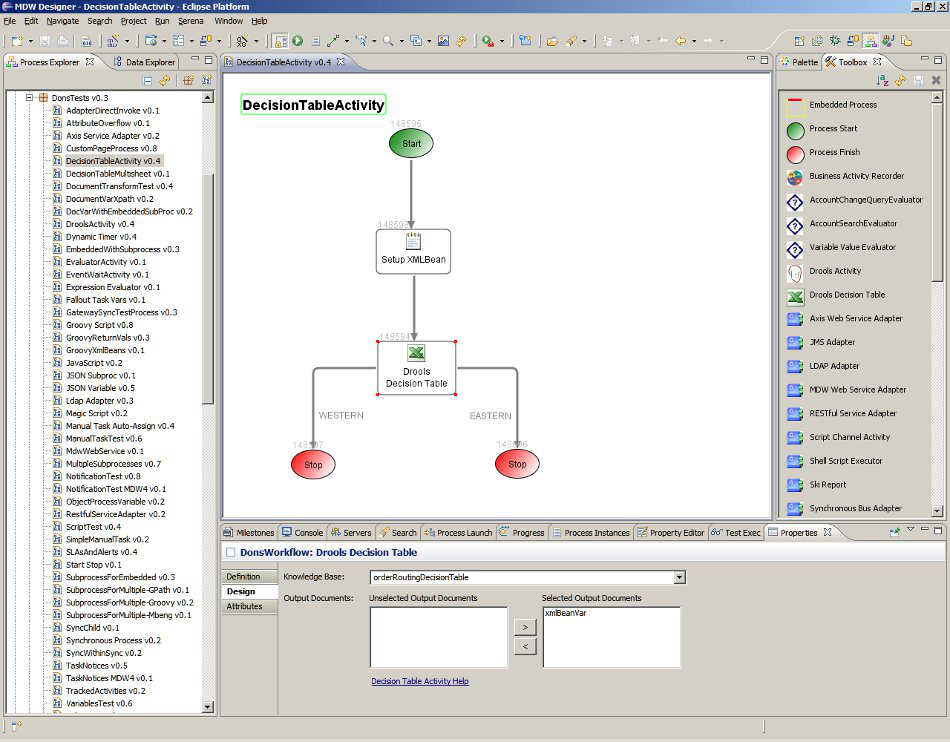
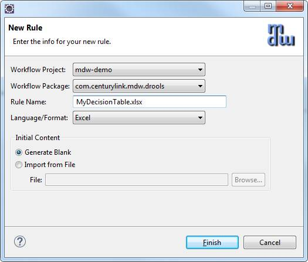
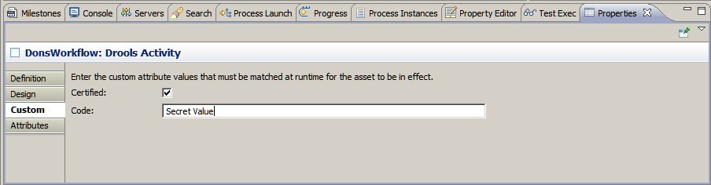

Drools Activities
MDW uses JBoss Drools for its rules engine.
Out of the box there are two pre-built Drools activities.
The regular Drools activity supports MVEL syntax for declarative rules definitions.
The Drools Decision Table activity uses an Excel spreadsheet to define a decision matrix which drives outcomes based on a tabular set of conditions.
Both types of Drools activities have the following basic characteristics in common:
- At design-time you designate an asset (DRL file or spreadsheet) that defines the rules logic.
This is known as the Knowledge Base, and is loaded from the database and cached by the engine in the server's memory heap.
These assets are versioned separately from the process definition that references them, and they are meant to be maintainable by business users or analysts.
- The defined rules have implicit runtime access to process variable values (which can be read or updated by the rules),
as well as to the underlying activity instance (for setting result code, etc).
Process variables are injected into the knowledge base as a Map<String,Object> entity.
- Optionally you can designate a 'Version Label Variable' that will be stamped with the exact rule version label that was used at runtime for the activity instance.
- Currently only stateless knowledge sessions are supported.

Creating the Rules Asset
To create a workflow asset for your knowledge base, right click on the desired package in Process Explorer, and select New > Rule.
In the resulting wizard you'll enter a name for your knowledge base asset, and you can elect to generate a starter knowledge base or import the initial version from an external file.
If you elect to "Generate Blank" the wizard will create an example from a template that already contains boilerplate content such as the declaration of the available global variables.

Runtime Filtering Based on Custom Attributes
A frequent requirement is the ability to control which version of the rules asset is in effect.
For most common use cases this can be controlled by specifying the Custom Attribute values that must be matched on the Custom tab of the activity properties.

In the example above the activity is configured to find rules whose custom attributes match Certified="true" and Code="Secret Value".
Note that this tab fulfills a different purpose from the Custom tab for the rules asset itself.
The Custom tab on the rules asset properties view is used to specify which custom attributes are available for all DROOLS type assets.
By contrast, the custom tab for the activity specifies the values that must be matched at runtime in order for this version to be in effect.
When multiple versions of a given rules asset have matching attributes, then the latest matching version is used.
If no matching versions are found, a runtime ActivityException is thrown.
When a workflow asset is saved, and the version is incremented, the new version is initialized with an empty set of custom attribute values.
Cache Preloading
The Rules Assets can be configured to preload by inserting newline-separated parameters such as the following in your bundle-context.xml or ApplicationCache.xml:
<Property Name="PreLoaded">
orderRoutingDecisionTable <!-- name-based -->
multiSheetDecisionTable~EastWest <!-- name and modifier (eg: sheet name) -->
orderRoutingRules{Certified=true,Code=Secret Value} <!-- name and custom attributes -->
</Property>